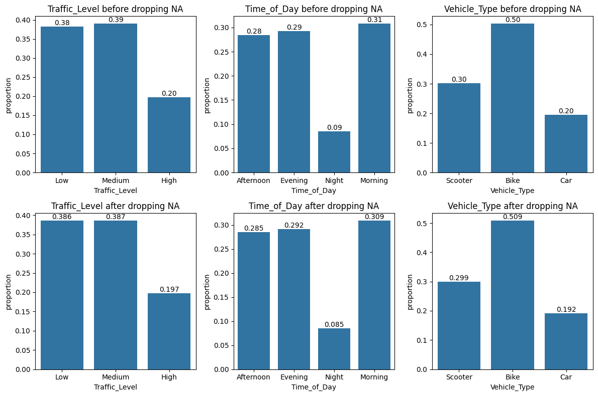
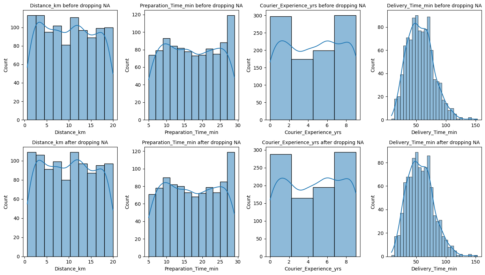
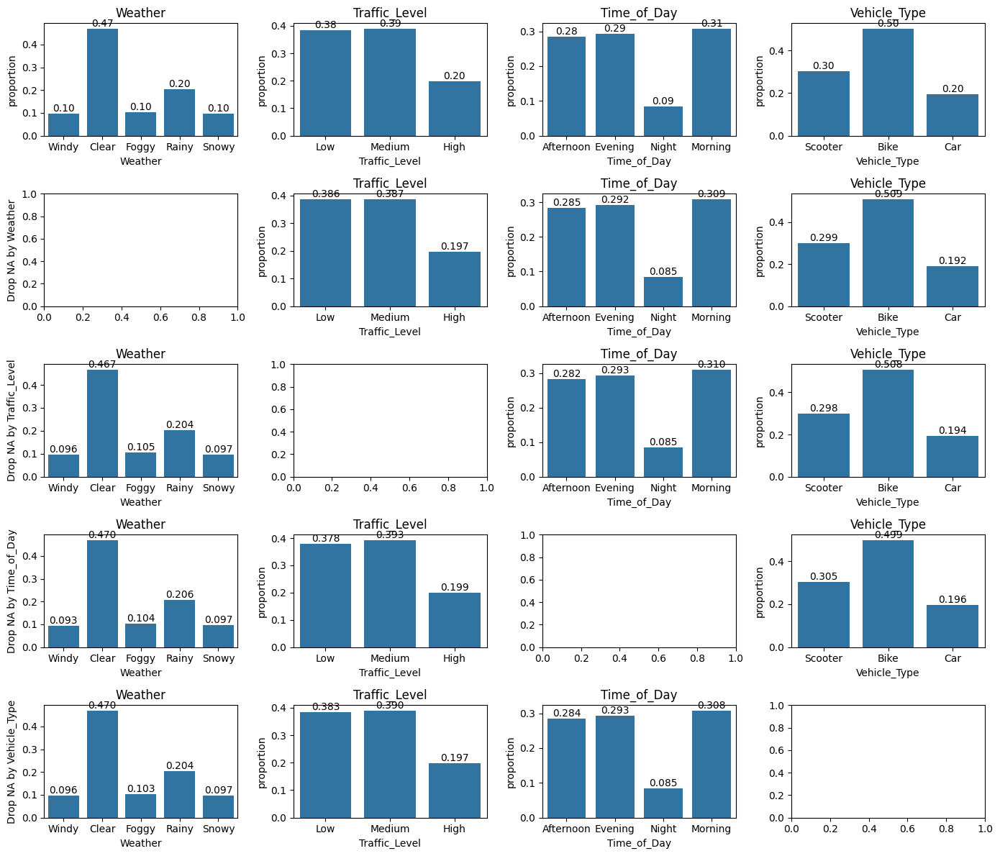
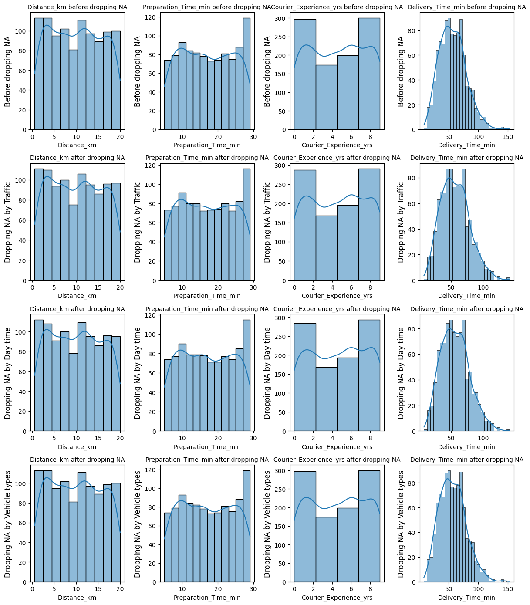
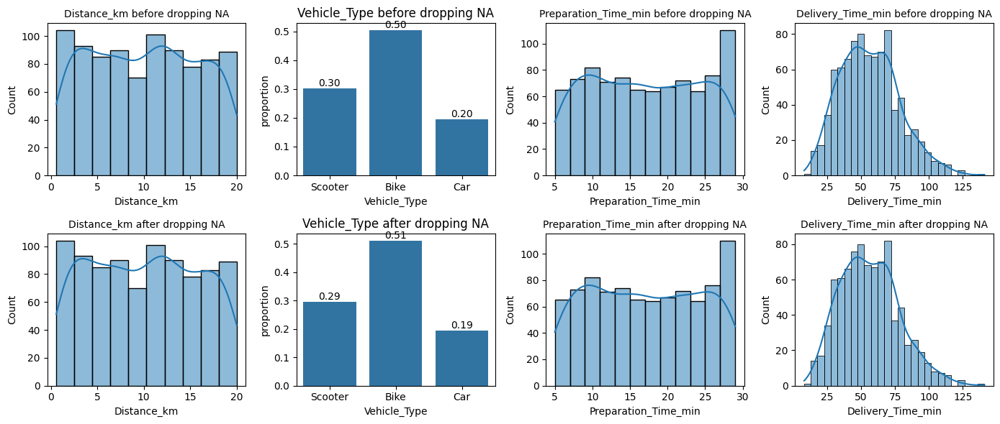
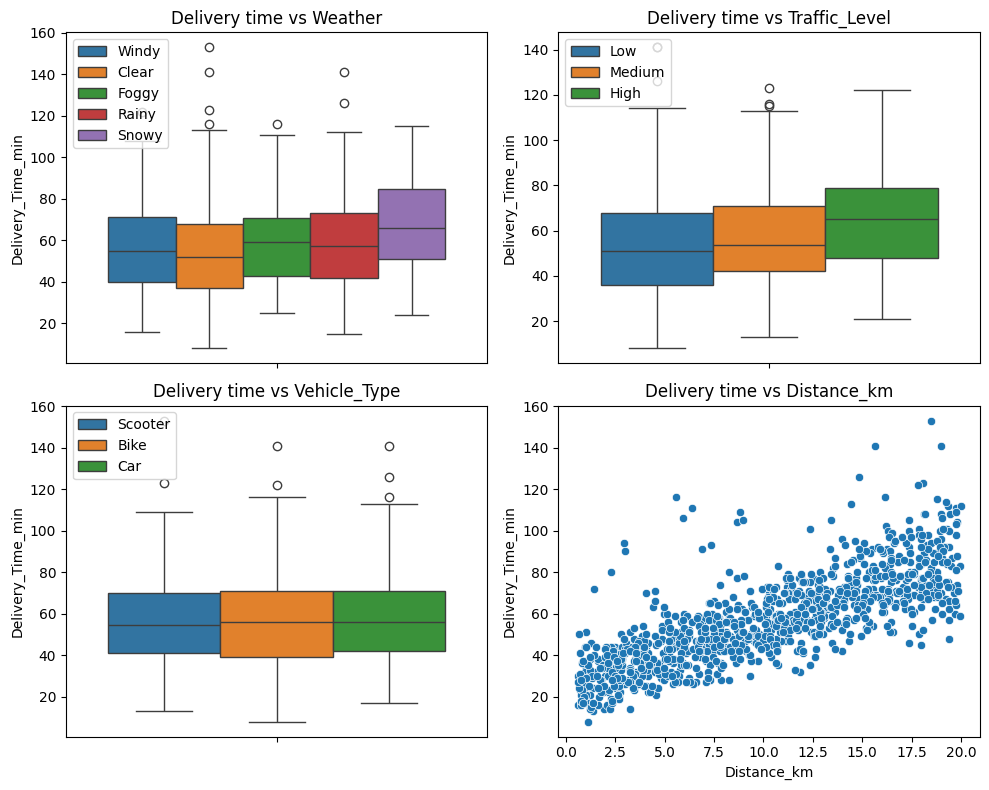

A. Address the problems related to the quality of this dataset.
Answer: In this dataset, the columns are corrected encoded with correct data type and the only problem is missing values.
data.dtypes.to_frame().T
Order_ID
Distance_km
Weather
Traffic_Level
Time_of_Day
Vehicle_Type
Preparation_Time_min
Courier_Experience_yrs
Delivery_Time_min
0
int64
float64
object
object
object
object
int64
float64
int64
Identifying Missing Values:
How many columns contain missing values?
How many missing values are in each of those columns?
data.isna().sum().to_frame().T
Order_ID
Distance_km
Weather
Traffic_Level
Time_of_Day
Vehicle_Type
Preparation_Time_min
Courier_Experience_yrs
Delivery_Time_min
0
0
0
30
30
30
0
0
30
0
data.describe()
Order_ID
Distance_km
Preparation_Time_min
Courier_Experience_yrs
Delivery_Time_min
count
1000.000000
1000.000000
1000.000000
970.000000
1000.000000
mean
500.500000
10.059970
16.982000
4.579381
56.732000
std
288.819436
5.696656
7.204553
2.914394
22.070915
min
1.000000
0.590000
5.000000
0.000000
8.000000
25%
250.750000
5.105000
11.000000
2.000000
41.000000
50%
500.500000
10.190000
17.000000
5.000000
55.500000
75%
750.250000
15.017500
23.000000
7.000000
71.000000
max
1000.000000
19.990000
29.000000
9.000000
153.000000
Analyze a Column with Missing Values:
Choose one column with missing values.
Visualize the distribution of the remaining columns before and after dropping the missing values in the chosen column.
What do you think is the nature of these missing values (e.g., MCAR, MAR, or MNAR)?
Why might this be the case?
Here we chooe to analyze the missing values of column Weather.
We analyze the effect of removing missing values on categorical columns, then on numerical columns. This will help us identify the nature of missing values in column Weather.
import matplotlib.pyplot as plt # for graphsimport seaborn as sns# Consider weather# Qualitative columnsqual = data.select_dtypes(include=['object']).columnsfig, axes = plt.subplots(nrows=2, ncols=3, figsize=(12, 8))i =0for va in qual:if va !="Weather":# Before removing NA in weather sns.countplot(data, x=va, ax=axes[0,i], stat="proportion") axes[0,i].set_title(va +' before dropping NA') axes[0,i].bar_label(axes[0,i].containers[0], fmt="%.2f")# After removing NA in weather sns.countplot(data.dropna(subset=['Weather']), x=va, ax=axes[1,i], stat="proportion") axes[1,i].set_title(va +' after dropping NA') axes[1,i].bar_label(axes[1,i].containers[0], fmt="%.3f") i = i +1plt.tight_layout()plt.show()

import matplotlib.pyplot as plt # for graphsimport seaborn as sns# Quantitative columnsquan = data.select_dtypes(include=['number']).columnsfig, axes = plt.subplots(nrows=4, ncols=4, figsize=(14, 8))i =0for va in quan:if va !="Order_ID":# Before removing NA in weatherif va !="Delivery_Time_min": width =2else: width =5 sns.histplot(data, x=va, ax=axes[0,i], binwidth=width, kde=True) axes[0,i].set_title(va +' before dropping NA', fontsize=10)# After removing NA in weather sns.histplot(data.dropna(subset=['Weather']), x=va, ax=axes[1,i], binwidth=width, kde=True) axes[1,i].set_title(va +' after dropping NA', fontsize=10) i = i +1plt.tight_layout()plt.show()

As dropping missing values within column Weather does not affect other columns, we can conclude that the nature of the missing values in Weather are ‘Missing Completely At Random (MCAR)’.
data.isna().sum().to_frame().T/data.shape[0] *100
Order_ID
Distance_km
Weather
Traffic_Level
Time_of_Day
Vehicle_Type
Preparation_Time_min
Courier_Experience_yrs
Delivery_Time_min
0
0.0
0.0
3.0
3.0
3.0
0.0
0.0
3.0
0.0
Repeat the Analysis:
Perform the same analysis for other columns with missing values.
We can drop missing values from each variable and consider the distribution of other columns all at once as follows:
# Consider Traffic column## Qualitative columnsfig, axes = plt.subplots(nrows=5, ncols=4, figsize=(14, 12))for i, va0 inenumerate(qual): sns.countplot(data, x=va0, ax=axes[0,i], stat="proportion") axes[0,i].set_title(va0) axes[0,i].bar_label(axes[0,i].containers[0], fmt="%.2f") axes[i+1,0].set_ylabel(f"Drop NA by {va0}")for j, va inenumerate(qual):if va != va0: sns.countplot(data.dropna(subset=[va0]), x=va, ax=axes[i+1,j], stat="proportion") axes[i+1,j].set_title(va) axes[i+1,j].bar_label(axes[i+1,j].containers[0], fmt="%.3f")plt.tight_layout()plt.show()

fig, axes = plt.subplots(nrows=4, ncols=4, figsize=(12, 14))i =0for va in quan:if va !="Order_ID":# Before removing NAif va !="Delivery_Time_min": width =2else: width =5 sns.histplot(data, x=va, ax=axes[0,i], binwidth=width, kde=True) axes[0,i].set_title(va +' before dropping NA', fontsize=10) axes[0,i].set_ylabel('Before dropping NA', fontsize=12)# After removing NA in Traffic level sns.histplot(data.dropna(subset=['Traffic_Level']), x=va, ax=axes[1,i], binwidth=width, kde=True) axes[1,i].set_title(va +' after dropping NA', fontsize=10) axes[1,i].set_ylabel('Dropping NA by Traffic', fontsize=12)# After removing NA in Day time sns.histplot(data.dropna(subset=['Time_of_Day']), x=va, ax=axes[2,i], binwidth=width, kde=True) axes[2,i].set_title(va +' after dropping NA', fontsize=10) axes[2,i].set_ylabel('Dropping NA by Day time', fontsize=12)# After removing NA in Vehicle type sns.histplot(data.dropna(subset=['Vehicle_Type']), x=va, ax=axes[3,i], binwidth=width, kde=True) axes[3,i].set_title(va +' after dropping NA', fontsize=10) axes[3,i].set_ylabel('Dropping NA by Vehicle types', fontsize=12) i = i +1plt.tight_layout()plt.show()

B. Drop all rows with at least one missing values:
Visualize the distribution of the columns without missing values before and after dropping all rows that contain at least one missing value.
What observations can you make from these visualizations?
Impute the missing values using an appropriate method (e.g., mean, median, mode, or advanced imputation techniques).
# Consider weather# Qualitative columnsquan = data.select_dtypes(include=['number']).columnsfig, axes = plt.subplots(nrows=2, ncols=4, figsize=(14, 6))i =0for va in ['Distance_km', 'Vehicle_Type', 'Preparation_Time_min', 'Delivery_Time_min']:if va =="Vehicle_Type": sns.countplot(data, x=va, ax=axes[0,i], stat="proportion") axes[0,i].set_title(va +' before dropping NA') axes[0,i].bar_label(axes[0,i].containers[0], fmt="%.2f")# After removing NA in weather sns.countplot(data.dropna(), x=va, ax=axes[1,i], stat="proportion") axes[1,i].set_title(va +' after dropping NA') axes[1,i].bar_label(axes[1,i].containers[0], fmt="%.2f")else:if va !="Delivery_Time_min": width =2else: width =5 sns.histplot(data.dropna(), x=va, ax=axes[0,i], binwidth=width, kde=True) axes[0,i].set_title(va +' before dropping NA', fontsize=10)# After removing NA in weather sns.histplot(data.dropna(), x=va, ax=axes[1,i], binwidth=width, kde=True) axes[1,i].set_title(va +' after dropping NA', fontsize=10) i = i +1plt.tight_layout()plt.show()

Before and after dropping the missing values, the distributions of columns are mostly preserved, therefore they are missing completely at random. Dropping or imputing with mean or median or mode is fine.
C. Analyzing Connections Between Columns
Impact of Weather on Delivery Time: determine if weather conditions affect delivery time.
Effect of Vehicle Type: How can we evaluate if the type of vehicle used influences delivery time?
Role of Distance: How can we analyze the relationship between distance and delivery time?
fig, axs = plt.subplots(nrows=2, ncols=2, figsize=(10, 8))for i, va inenumerate(["Weather", "Traffic_Level", "Vehicle_Type", "Distance_km"]):if va !="Distance_km": sns.boxplot(data, y="Delivery_Time_min", hue=va, ax=axs[i//2, i%2]) axs[i//2, i%2].legend(loc="upper left")else: sns.scatterplot(data, x=va, y="Delivery_Time_min", ax=axs[i//2, i%2]) axs[i//2, i%2].set_title(f"Delivery time vs {va}")plt.tight_layout()plt.show()

According to the previous graphs:
Weahter condition seems to not affect delivery time that much except for the snowy time where the delivery times take slightly longer than other conditions.
The traffic level also seems to not influence delivery time that much either. The more busy the traffic, the slightly longer delivery time.
The vehicle type on the other hand does not influence the delivery time at all since the boxplots look nearly identical on all types of vehicle.
The Scatterplot shows a clear trend incating that the longer the distance, the longer time it takes to delivery the foods.
2. Auto-MPG Dataset
This dataset contains spec of various cars and is available in kaggle. For more, read here.